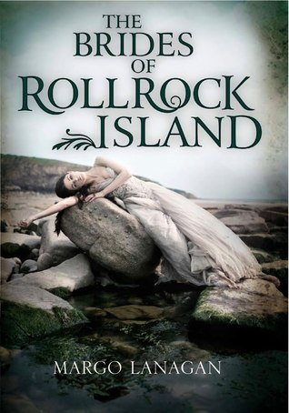
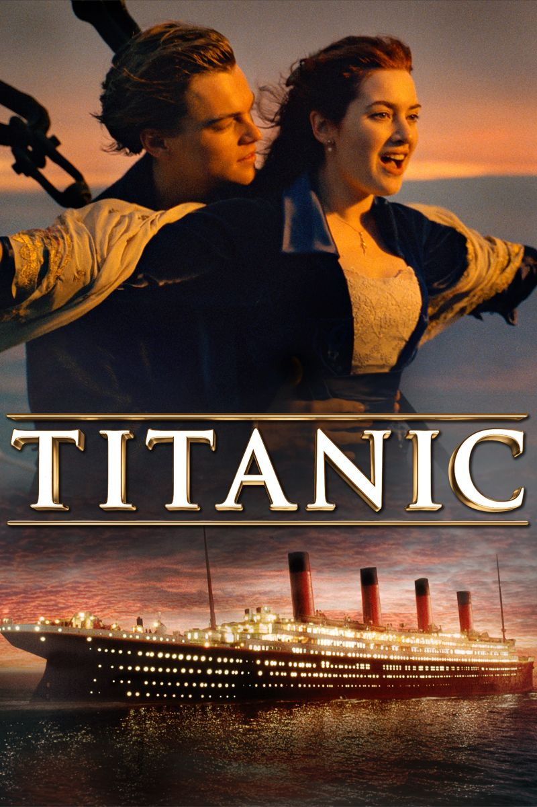

My Favourite pass-time: Doing something creative, that might be using Photoshop, painting and drawing in the physical world, gardening (which I can do year round in Florida), baking and cooking. I also love writing little stories and illustrating them. Making pretty cards for my friends and often learning new things in a wide field of interests. I sure would love to have 100 hours every day.
My Favourite sport: My favourite pastime is playing football. Five years ago, my father asked me to watch a football match. After that match, I became interested in the game. I pestered my mother day and night to buy me a football. My mother finally agreed after one long week of incessant nagging.The moment I received the ball, I dashed down the stairs to the neighbourhood field which belongs to Gan Eng Seng Secondary School. I started kicking the ball around. Just like bees are attracted to honey, a lot of young boys were attracted to my football. Since then, I have been playing football with this group of budding footballers. With constant practice, I have improved in my football skills. Now I am capable of dribbling, heading, striking and dummying. Only yesterday, I scored a hat-trick while playing a match with my friends. I was as proud as a peacock.My father and I are avid supporters of Manchester United Football Club which recently won three gold trophies. I never miss any of their matches. We are proud owners of many football magazines and posters depicting great players like David Beckam, Mickael Silvestre and Andy Cole to name only three. My favourite outfit is a threadbare MUFC outfit.
My Favourite book: The Bride of Rollrock Island by Margo Lanagan is my favourite book.This is a breathtaking book and one that utilises different points-of-view beautifully. I started the book full of sympathy for Misskaella who’s largely ignored by her family and the rest of the community of Rollrock. She takes her revenge in an unflinching fashion. However, after the last chapter I had tears in my eyes and went back to read the beginning again. Such beautiful writing.
My Favourite movie: Movies are dreams I see with eyes wide open. That’s what I do. I watch movies to shut out the voice inside me for an hour or two. I set sail for another existence leaving behind the whirlpool of funk, noise and broken air-conditioning. The allure of undiscovered places is irresistible as it is fascinating. Over the years, I have discovered many places, beautiful and captivating, full of life and spring. I have brought back shiny postcards to remind myself of the journey. SWADESH, AVATAR, TITANIC, INCEPTION etc are my favourite movies. Among them TITANIC is the movie I like most.
